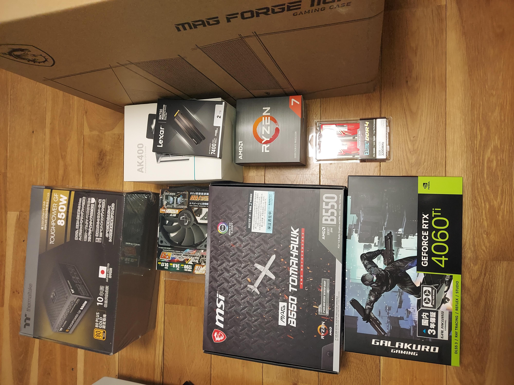
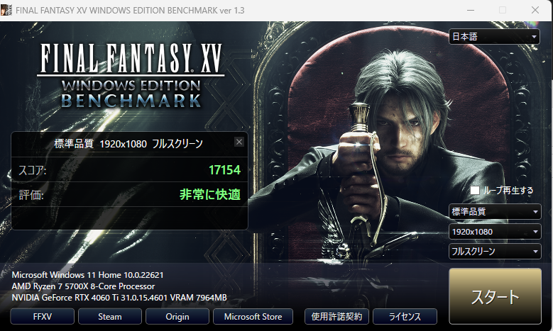

PCを組みました。
以前までは、mouseで購入したBTOノートPCにディスプレイを接続して、デスクトップのように使っていたのですが、もう買ってから5年近く酷使していたため動作が激重。そして最近、動画編集等も始めてスペック不足が目立ってきたため、どうせなら新しくPCを組もうと決意。
以下の点を重要視して自作しました。 - コスパ(予算20万しないくらい) - そこそこのGPU - 動画編集 - ちょっと重めのゲームを快適に動かす
| 部品 | 型番 | 価格 |
|---|---|---|
| CPU | AMD Ryzen7 5700X | 25697 |
| CPUクーラー | DEEPCOOL AK400 | 3000弱 |
| マザーボード | B550 TOMAHAWK | 17790 |
| メモリ | Team DDR4 3200Mhz PC4-25600 | 8000くらい |
| SSD | Lexar 2TB | 18480 |
| グラボ | 玄人志向 RTX 4060Ti | 60000弱 |
| 電源 | Thermaltake TOUGHPOWER GF 850W | 14000と少し |
| ケース | MSI MAG FORGE 110R | 5444 |
| OS | win11 | 19000くらい |
| ケースファン | サイズ KAZE FLEX | 919 * 2 |
値段は合計して、17万4000円くらいでした。 玄人志向の4060tiが60000円に達しない程に安くなっていたのと、AmazonセールでCPUとマザーボードを購入できたのが大きい……。 メモリに少しお金を使いすぎてしまってちょっと後悔。 それとグラボの電力効率を見ると、電源は600Wくらいでちょうどよかったかなと少し後悔してます。
PCを自分で組んだのはこれが初めてでした。友人と話しながらゆっくり進めたので、すべて終わるまで6時間弱くらいかかりました、ほんとうに疲れる作業でした……。時間をかけただけあって、電源がついたときの喜びの大きいこと大きいこと。

スペック確認のために、組んだ後すぐに動作させたFFXVベンチマーク結果です。

実際に使用している様子